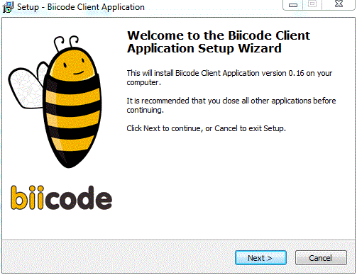

As a continuation of the previous post, which introduces the way in which installers for several systems are automatically generated, we will discuss now the solution adopted for windows.
The main tool used for packaging and installing the client binaries for Windows is the popular Inno Setup program. This tool is completely free of charge and supports almost every windows release since 2000.
Installators are created by means of scripts, which are ASCII text files with an “.iss” extension. The concept is quite similar to the distribution definition file described for MacOS.
The script file controls every aspect of the installation. It specifies which files have to be installed and where, what short-cuts have to be created and what are they in order to be named, and so on. It ‘s arranged into sections and each section controls a different part of the installation.
A quite simple and small script could be the next one:
1 2 3 4 5 6 7 8 9 10 11 12 13 14 15 16 17 18 19 20 21 22 23 24 25 | < ; -- Example1.iss -- ; Demonstrates copying 3 files and creating an icon. ; SEE THE DOCUMENTATION FOR DETAILS ON CREATING .ISS SCRIPT FILES! [Setup] AppName=My Program AppVersion=1.5 DefaultDirName={pf}\My Program DefaultGroupName=My Program UninstallDisplayIcon={app}\MyProg.exe Compression=lzma2 SolidCompression=yes OutputDir=userdocs:Inno Setup Examples Output [Files] Source: "MyProg.exe"; DestDir: "{app}" Source: "MyProg.chm"; DestDir: "{app}" Source: "Readme.txt"; DestDir: "{app}"; Flags: isreadme [Icons] Name: "{group}\My Program"; Filename: "{app}\MyProg.exe" ; |
The script could have a lot of different sections that allow almost all the operations required for a correct installation and uninstallation in windows systems. It includes a integrated Pascal scripting engine for advanced run-time customization. For example, we use that section to make a nice uninstalling and to modify the register in an intelligent way, avoiding unnecessary register operations.
As it’s done in MacOS installers, in our automation repo we have prepared a resource file that contains all the files used by the script (images, icons, text files, and the script itself) :
1 2 3 4 5 6 7 8 9 10 | resources ├── windows ├── Docs │ └── readme.txt ├── Images │ ├── biiconsole.ico │ ├── installlerimage.bmp │ └── logobii.bmp ├── license.txt └── biicodeinstaller.iss |
Before calling the external tool (InnoSetup) all the required files (installer resources and biicode binaries) are copied into a temporal folder. The main python script that automates the process is executed in a windows virtual machine in which InnoSetup is installed. In order to avoid the hard-coding of the external command we are retreiving that info through a registry request for both, win32 and win64:
1 2 3 4 5 6 7 8 9 10 11 12 13 14 15 16 | if platform.system() == 'Windows': import _winreg def innoexepath(): result = getregvalue( 'HKLM\\SOFTWARE\\Microsoft\\Windows\\CurrentVersion' '\\Uninstall\\Inno Setup 5_is1\\InstallLocation') if result: return os.path.join(result, 'ISCC.exe') result = getregvalue( 'HKLM\\SOFTWARE\\Wow6432Node\\Microsoft\\Windows' '\\CurrentVersion\\Uninstall\\Inno Setup 5_is1\\InstallLocation') if result: return os.path.join(result, 'ISCC.exe') return 'ISCC.exe' |
Finally, an important but simple pre-build step: we update the version info through a simple but effective search and replace text operation, looking for a key string included into the script and the text documents.
1 2 3 4 5 6 7 8 9 10 11 12 | from biicode.utils.pack import create_client_binary from biicode.client.command.process_executor import execute from biicode.common.utils.file_utils import search_and_replace from biicode.common import __version__ as version search_and_replace(iss_path, '%VERSION%', version) command = [] command.append(innoexepath()) command.append(os.path.join(folder_tmp, 'installdata', 'biicodeinstaller.iss')) execute(command) shutil.copy(os.path.join(folder_tmp, 'setup.exe'), 'C:/bii-setup.exe') |
As you can see, a product executable has been created and renamed as “bii-setup” and placed in a convenient directory for publishing.
The InnoSetup tool creates a wonderful installer with a brief and simple script file:

Hope you enjoy installing!
Related Posts
Pingback: bii internals: Automating DEB pkg generation | Biicode Blog()